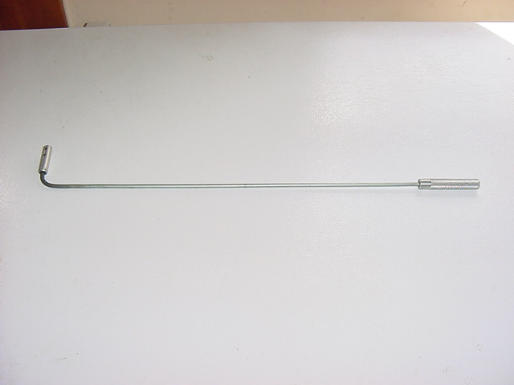
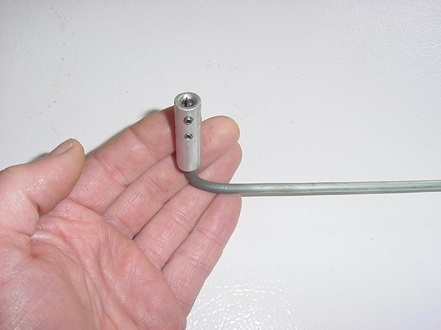
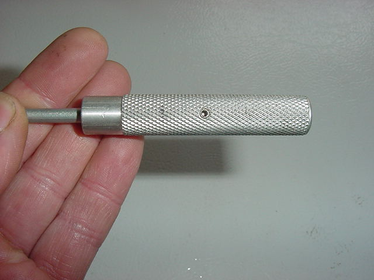

So how many times have YOU burned your hands adjusting carbs?
Here's handy tool made from leftover junk, a 90 degree screwdriver for adjusting those pesky carbs. Turn the handle and the screwdriver on the other end turns
with it. The body is 3/16" brake line. A piece of old speedo cable inside connects the ends. The screw blade holder and handle are drilled aluminum rod with
some set screws.


